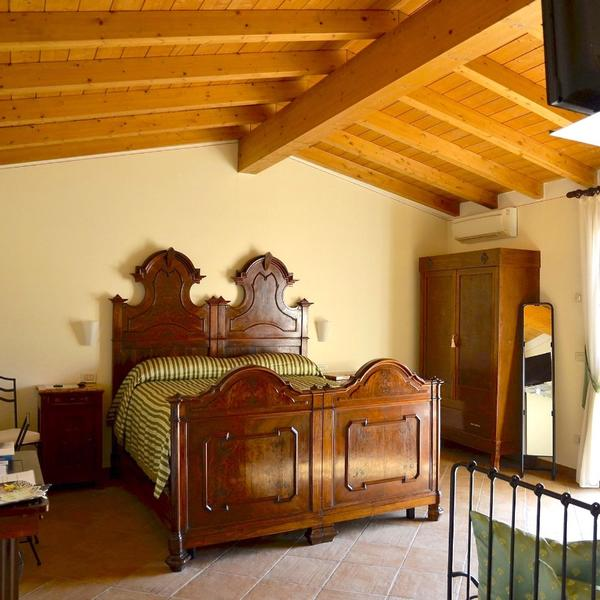
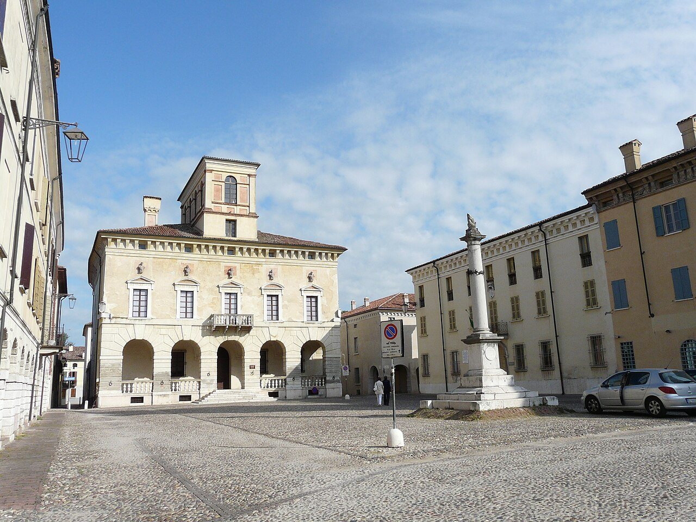
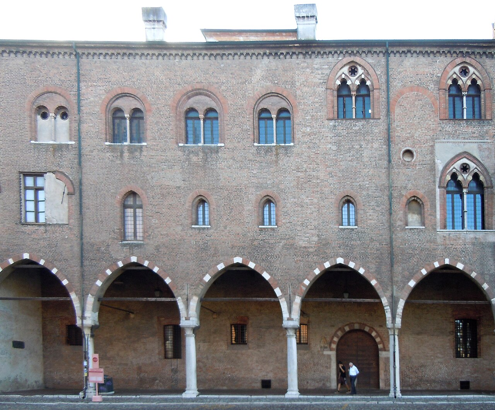
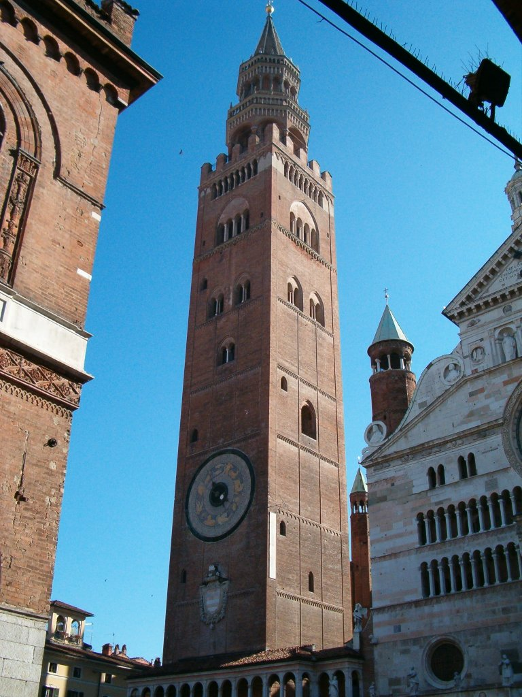
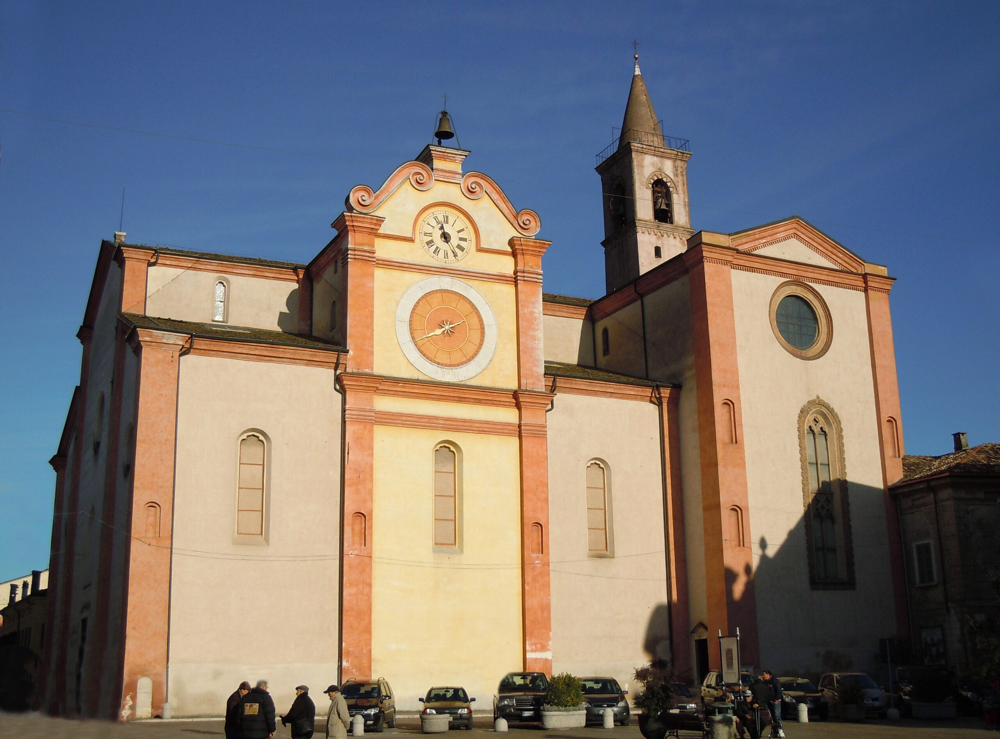

No hotel sits within true walking distance. The closest bed is an unlit-road country lane after nine courses — fine in daylight, not after the pairing. The triptych below is the concierge's room list.

~3 KM · shuttle Concierge's pickWant more character & willing to pay a longer cab? Toson d'Oro sits inside Sabbioneta's Renaissance walls — three rooms, ≈€120 round-trip cab to Runate. Worth it for a single night, not for the whole weekend.
A strict road circle around Dal Pescatore captures Sabbioneta — Vespasiano Gonzaga's UNESCO ideal city, ~22 km[7]. That is the natural Saturday-morning anchor. Mantua (39 km) and Cremona (33 km) sit just outside — yet they are unmissable for a cultivated weekend.
Inside the bullseye: Asola's cathedral with the Romanino organ shutters[10], Riserva Le Bine wetlands (a WWF heron colony that grew from one pair in 1955 to ~100 today[11]), the AR.CRE.MAN. Grana Padano dairy at Quattrocase, and the Museo del Giocattolo in Canneto itself.

In radius · 22 km
Stretch · 39 km
Stretch · 33 km
In radius · 13 kmLombardy goes dark on Mondays. Dal Pescatore itself is closed Mondays and Tuesdays[2], so the natural weekend shape is Friday arrival → Saturday Sabbioneta + dinner → Sunday Mantua-or-Cremona. The doll museum is weekends-only — if you fly out Sunday lunchtime, you miss it.
The shuttle-fare contradiction is the only piece of pre-booking homework left: phone 9 Muse to confirm the price of the Dal Pescatore transfer, and price a local Canneto cab (≈€10–15 each way) as the fallback — so the wine pairing isn't a sober-math problem at the second-to-last course.